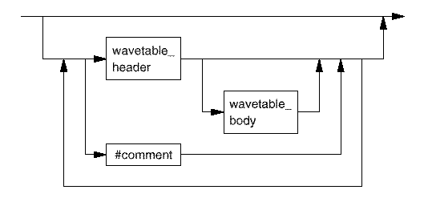

Timing Wavetables - Reference
Wavetables are used to define the waveforms to be applied to specific pins without defining edge timings. In other words, these tables are used to define sets of edge actions independently of the Timing Equation Component and the Timing Specification Component.
Wavetables are also used to define default device cycles and display mode.
